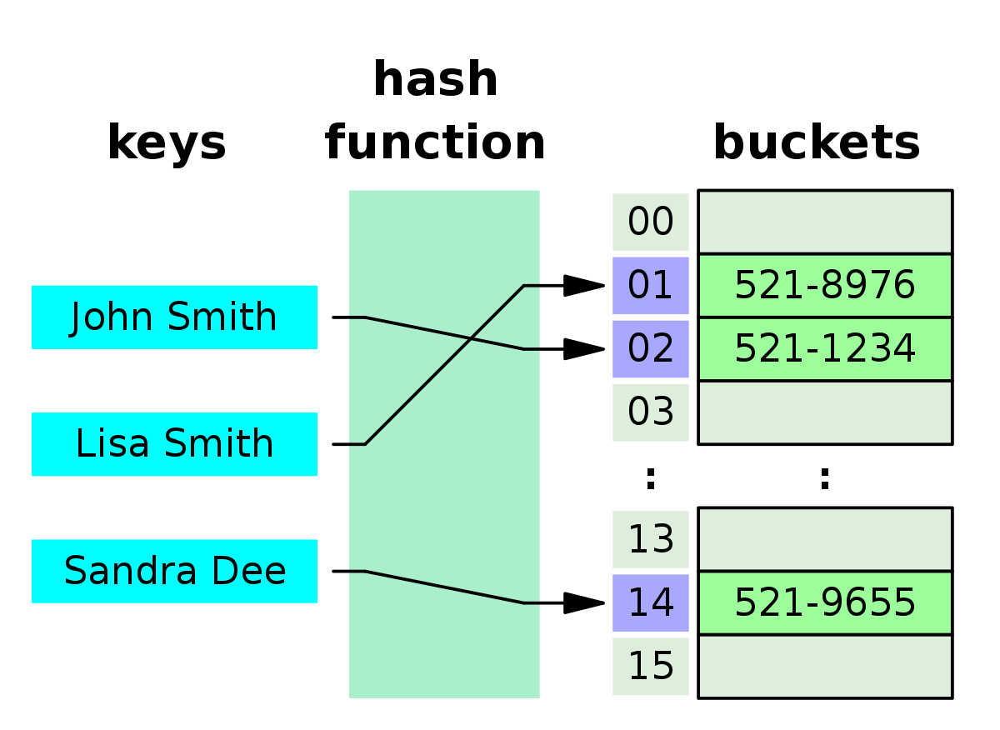

想像一下有一個非常大的資料庫如全國總人口，如果只是單純使用一個 Array 來儲存，每次查找的時間複雜度就會是 O(n)，如果希望降低這些功能的時間複雜度到 O(1)，就可以透過 hsah table 來達到;Hash Table 其實就是透過 hash function 將 key 轉換成索引，並以 key-value 的方式來儲存資料。
在 JavaScript 中，會透過 Object (包含 Array)來進行 Hash Table 的實作
定義

- Hash Table 為一個 Array，其中每一筆資料都是 key-value pairs，稱為
Bucket
- 透過自定義的 hash function 將資料的 key 轉化成一個 hash code，藉此決定資料要存在 Hash Table 中的哪一個位置
- 無論透過什麼方式來實作 hash function，都有可能在不同的資料 input 下，產生相同的 output (hash code)，史的資料儲存在相同的記憶體位置上，導致查找資料的時間複雜度由 O(1) -> O(n)，這種情況就稱為
Collision
- 當產生
Collision 的情況時，就會透過 Linked List 的方式將資料串聯在一起
實作
一個 Hash Table 會包含以下幾種功能需求:
- hash function: 將資料提供的 key 產生特定的 hash code 儲存在 Hash Table 中，一般會將 key 所轉化的數字透過除以 Array 長度所得的餘數 (% array.length)，藉此儲存在有限長度 Array 的
Bucket
- memory: 儲存資料，時間複雜度為 O(n)
- insert: 新增資料，時間複雜度為 O(1)
- delete: 刪除資料，時間複雜度為 O(1)
- search: 查找資料，時間複雜度為 O(1)，如果發生
Collision 的狀況，時間複雜度就是 O(n)
- keys: 取得所有 key，時間複雜度為 O(n^2)
1
2
3
4
5
6
7
8
9
10
11
12
13
14
15
16
17
18
19
20
21
22
23
24
25
26
27
28
29
30
31
32
33
34
35
36
37
38
39
40
41
42
43
44
45
46
47
48
49
50
51
52
53
54
55
56
57
58
59
60
61
62
63
64
65
66
67
68
69
70
71
72
73
74
75
76
77
78
79
80
81
82
83
84
85
86
87
88
89
90
91
92
93
94
| class HashTable {
storage: any[];
constructor(size: number) {
this.storage = new Array(size);
}
private hash(key: string) {
let hash = 0;
for (let i = 0; i < key.length; i++) {
hash += key.charCodeAt(i);
}
return hash % this.storage.length;
}
print() {
console.log(this.storage);
}
insert(key: string, value: any) {
const address = this.hash(key);
const bucket = this.storage[address];
if (!bucket) {
this.storage[address] = [
[key, value]
];
} else {
let inserted = false;
for (let i = 0; i < bucket; i++) {
if (bucket[i][0] === key) {
bucket[i][1] = value;
inserted = true;
}
}
if (!inserted) {
bucket.push([key, value]);
}
}
return this.storage;
}
search(key: string): any {
const address = this.hash(key);
const bucket = this.storage[address];
if (bucket) {
for (let i = 0; i < bucket.length; i++) {
const [_key, value] = bucket[i];
if (_key === key) {
return value;
}
}
}
return undefined;
}
delete(key: string) {
const address = this.hash(key);
const bucket = this.storage[address];
if (bucket[0][0] === key && bucket.length === 1) {
delete this.storage[address];
} else {
for (let i = 0; i < bucket.length; i++) {
if (bucket[i][0] === key) {
delete bucket[i];
}
}
}
}
keys() {
let keys: any[] = [];
for (let i = 0; i < this.storage.length; i++) {
const bucket = this.storage[i];
if (bucket) {
for (let j = 0; j < bucket.length; j++) {
const [key] = bucket[j];
keys.push(key);
}
}
}
return keys;
}
}
const myHashTable = new HashTable(2);
myHashTable.insert('grapes', 10000);
|
參考資料
Cracking the Coding Interview
Github
Objects and Hash Tables in Javascript
[資料結構] Hash Table
Hash Tables - Beau teaches JavaScript